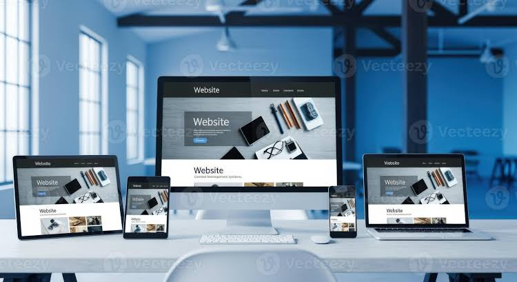

MY PROJECT

This project is a personal portfolio website created to showcase my skills, services, projects and professional information. The website is designed with a modern and responsive layout.
The main objective was to create a professional online portfolio where recruiters, clients and visitors can learn about my technical skills and projects.
The website includes a responsive navigation menu, colorful service cards, portfolio project filtering, blog pages, project details pages, contact section and downloadable CV functionality.
The website is designed to adjust its layout according to the device screen size. The content can be viewed on desktops, laptops, tablets and mobile phones.
JavaScript is used to provide interactive functionality such as portfolio category navigation, buttons, form interactions and smooth scrolling.
I worked on the complete website structure, styling, navigation, project pages, blog pages and interactive functionality.
One challenge was maintaining a consistent design across different pages. I solved this by using reusable CSS classes and maintaining a common design throughout the website.
This project helped me improve my HTML, CSS and JavaScript skills. I also learned how to organize a multi-page website and create a professional portfolio.
← Back to Portfolio